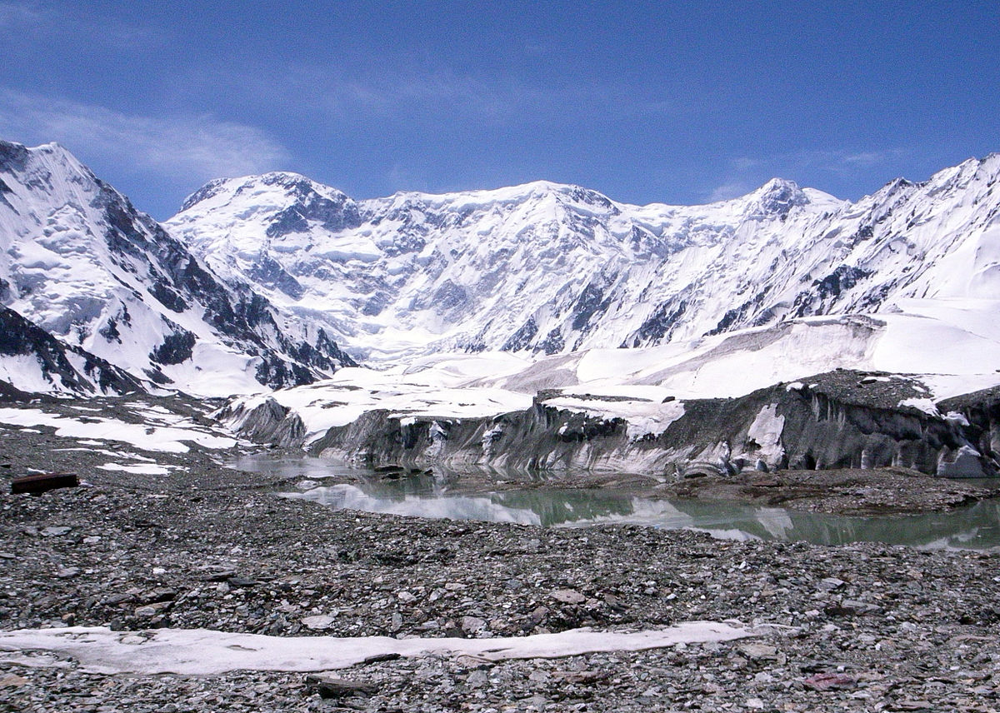

Le Jengish-Chokusu
Jengish Chokusu, connu également sous le nom de Pic Pobeda, est le plus haut sommet du Tian Shan et du Kirghizistan, culminant à 7 439 mètres d’altitude. Située à la frontière entre le Kirghizistan et la Chine, cette montagne impressionnante est un véritable défi pour les alpinistes et un joyau géographique de l’Asie centrale.
Signification du nom et histoire
Le nom kirghize Jengish Chokusu signifie « Sommet de la Victoire », une appellation officielle adoptée après la Seconde Guerre mondiale. Pendant l’ère soviétique, il était souvent appelé Pic Pobeda, en référence à la victoire de l’Union soviétique à Stalingrad. Sa première ascension officielle a été réalisée en 1956 par une équipe menée par l’alpiniste soviétique Vitaly Abalakov, bien que des tentatives plus anciennes soient possibles.
Géographie
Jengish Chokusu se trouve dans l’extrémité orientale du Kirghizistan, près de l’énorme glacier d’Inylchec, l’un des plus grands du Tian Shan. Ce sommet est connu pour ses arêtes glacées, ses conditions météorologiques imprévisibles et ses vents violents, ce qui le rend très dangereux pour les alpinistes. Situé à proximité du désert de Taklamakan et du lac Issyk-Kul, la montagne est influencée par des écarts climatiques extrêmes.
Biodiversité
Les écosystèmes autour de Jengish Chokusu sont riches malgré le climat rigoureux. La faune comprend des espèces emblématiques comme le léopard des neiges, l’ours brun himalayen et des oiseaux majestueux comme l’aigle royal. La flore est adaptée aux conditions alpines, avec des plantes rares et endémiques qui prospèrent dans les zones subalpines et les prairies de haute montagne.
Alpinisme et difficultés
Jengish Chokusu est réputé comme l’un des sommets les plus difficiles du monde à gravir. La voie classique, par l’arête nord, implique de longues traversées sur des crêtes exposées et des conditions climatiques extrêmes. Ces défis en font une destination prisée par les alpinistes expérimentés cherchant à tester leurs limites.
Un sommet emblématique
En plus de son importance pour l’alpinisme, Jengish Chokusu est un symbole culturel et géographique pour le Kirghizistan. Son isolement et sa beauté sauvage attirent des aventuriers et des chercheurs de paysages spectaculaires.Pour ceux qui souhaitent explorer la région sans tenter l’ascension, les sentiers autour de la montagne, comme ceux menant au glacier Inylchec, offrent des panoramas époustouflants et une immersion dans l’univers du Tian Shan.